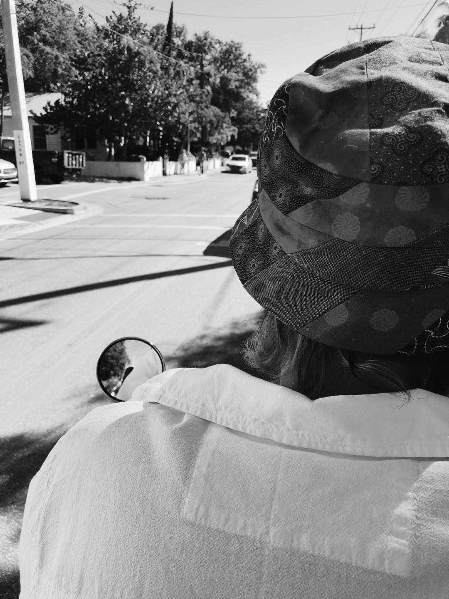

This is a picture of me in Randyland. This is an art museum located in Pittsburgh, Pennsylvania. I find this image interesting because of the contrast between the vibrant colors and me. I am wearing black and white colors which make me standout in the vibrant and chaotic looking background.
I took this picture when I was on a road trip in the Mid-Atlantic and Midwest. Just like all the other pictures in my collection, it’s an image I took on a road trip. I like to take keep a souvenir of everyplace I visit as a memory of the good time I had. Taking pictures of things is one of the ways that I express my love for things and places.

Zhisheng Wang - 2021
This image s about someone traveling to a certain location. One that we do not know about. However, it does tell the story of the journey to this location. The black and white color communicate a sense of calmness and serenity. The reflection in the mirror also adds some dramatic tension to the image and makes it more interesting.
It’s the part of the image that I find most interesting because it draws your focus in and is the first thing I looked at when I opened the image. The contrast of the hat pattern and the plainness of the shirt also add a point of interest to the whole image, drawing your eyes in.
Using Photographs to Teach Close Reading and Visual Thinking Skills
The article for today is about how we can use photographs to teach anyone, from children to grown adults, how to develop their reading and thinking skills using visuals.
First off, photographs or visuals are a universal language and can be used to communicate to different people regardless of their background. So, in using pictures people can understand what you are trying to communicate.
I choose to look at how the north2 website uses imagery to communicate its purpose to users. It is a design studio based in Croatia that specializes in the creation of websites that stand out from the many.
First off, their home page is designed with minimalistic approach in mind. It is very much picture based and the pictures themselves tell different stories that are all connected. There is consistent theme of hand-crafted products that you get from scrolling through the website.
If you look at the projects page on the website, it also tells a linear story that starts and finishes with the same consistent theme of hand-crafted. By the time you scroll to the bottom of the page, you will want to go back and scroll through it again.
So, I think this website archived the goal of making viewers more curious, which in turn develops their thinking skills and leads to development of new ideas.
Best Practices for Modals / Overlays / Dialog Windows.
For this week, I take a look at what the best ways to design modals is in an article written by Naema Baskanderi. In her article, she discusses some of the best ways to design overlays in UI / UX so that they are not annoying destructive to the user.
Personally, I can agree with her that overlays have become popup windows and I also do find them annoying. If poorly designed, they get in the way of a user’s ability to complete a task. However, Naema mentions that they can be designed to work well.
One of the ways that this can be archived is to use them only when necessary. By this, she means that there are a few scenarios where modals are considered to work well. These being when you want to grab the user’s attention, need the user to input information like on a login or sign-up window, show additional information that is both is both related and not related ot the parent page.
In addition to these scenarios, she also mentioned other elements that are crucial to making your modal work well. One of them being escape route for the user to leave the modal. This allows a user to close the modal at any given time. Another being a descriptive title that tell the user why they are seeing the modal. This can lead to them not getting frustrated by the modal and leaving the page entirely.
These are just some of the few factors that can help anyone design a better modal and make the life of a user easier.
Best Practices for Form Design
This week I read about an Article that discussed the do’s and don’ts of form design when it comes user interaction and experience. The goal of the article, at least what I believe, was to teach products designers how to design online forms that users will want to fill out and finish. It discussed methods that designer can use to reduce user cognitive load.
What is cognitive load you may ask? Well, it the amount of brain power that a user needs to complete or carryout a tack online. This can be filling out an application form for a loan, checking out after shopping online, buying a plane ticket, etc.
One of the methods of reducing cognitive load, is by compartmentalization of your forms. This the breakdown of huge chunks of information into small non stressful bit of information. This helps the user not to lose focus of feel fatigued since they are being presented with small bits at a time.
In addition to this, the article also talks about adding progression indicators for user. This simply means show a user their progress with a task so that it does not feel like an endless rabbit hole. This can be archived by adding a progress bar with different 1,2,3 steps. By not feeling as if the task is endless, the user has less cognitive load and a higher chance of completing the task.
These are only a few of the methods that the article dives into. These are just ones that I felt were crucial to designing a good online form. Every single practice discussed in the article is important to designing products that make user experiences easier and simpler. This is our duty are designers.